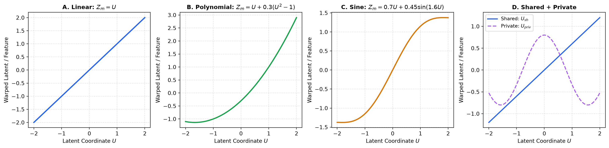
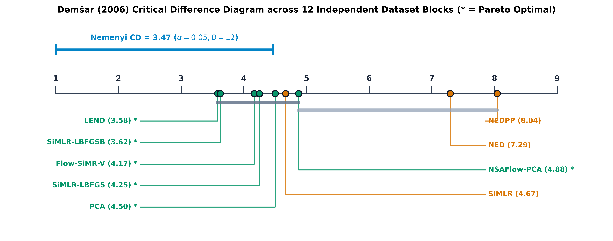
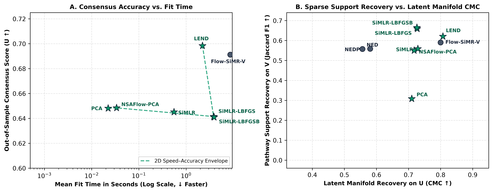
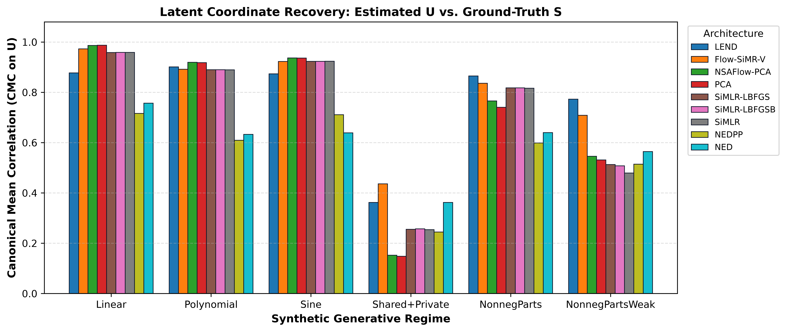
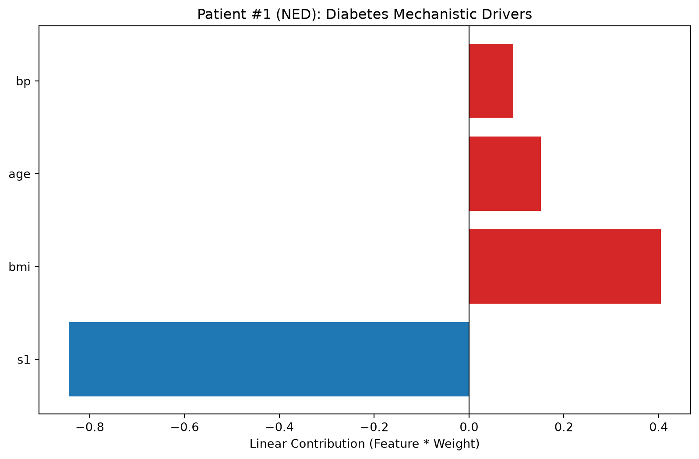
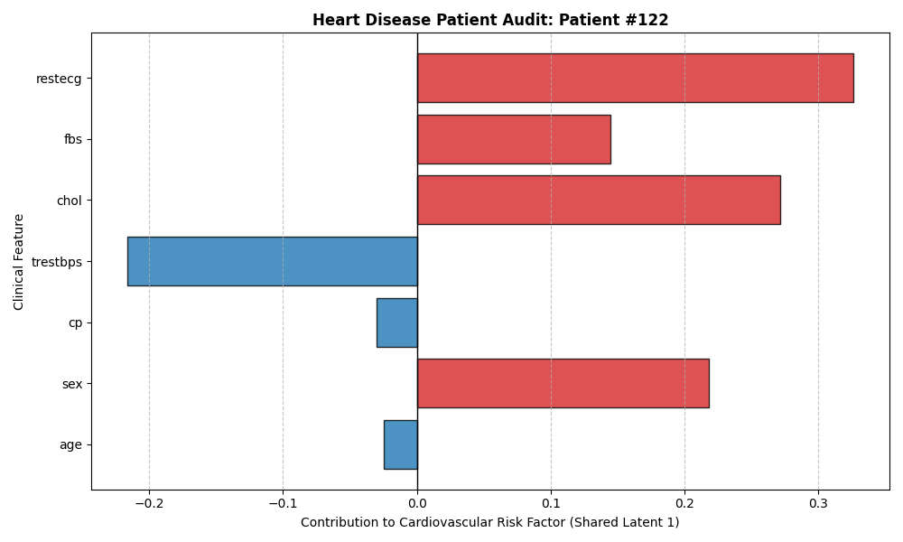
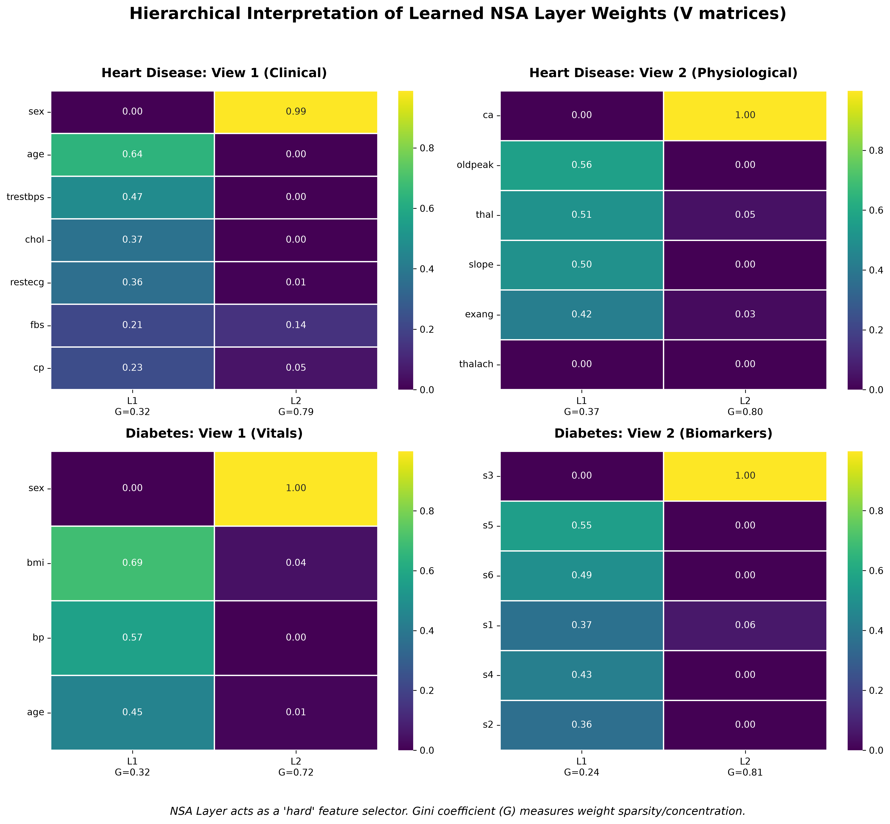
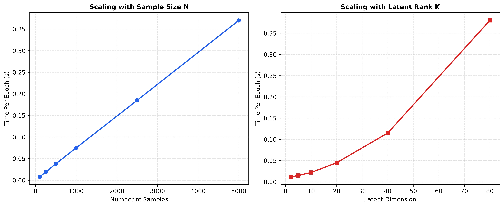

3 Experiments
3.1 Experimental Design, Cohorts, and Generative Regimes
3.1.1 Multi-Modal Data Regimes, Data Hygiene, and Replication Structure
To evaluate multi-modal architectures across distinct inductive biases and biomedical domains, we establish a unified benchmark protocol mirroring the five deductive stages of Chapter 2 across 12 multi-modal data regimes: 6 controlled synthetic manifolds with known ground-truth latents \(\mathbf{U}^*\) and bases \(\mathbf{V}^*\), plus 6 established real-world clinical, multi-omics, and neuroimaging cohorts evaluated across \(N_{\text{seeds}} = 3\) independent random seeds (\([42, 43, 44]\)) and 9 model architectures (\(12 \times 3 \times 9 = 324\) total model evaluations, with private_scale = 0.5, consolidate = False, and iteration-0 linear warm-start initialization), complemented by a 1,214-combination hyperparameter sweep and a 10-seed mediation benchmark on ADNI-MCI (\(N = 1,084\)).
Following Demšar (2006), global statistical inference is conducted on the \(B = 12\) independent dataset blocks (build_ranking_blocks in src/pysimlr/benchmarks/deep_ranking.py), averaging replicates within each \((\text{Dataset}, \text{Model})\) cell before ranking so repeated seeds never inflate degrees of freedom. Across all real-world cohorts, we enforce three strict data-hygiene invariants:
- In-Fold Standardization & Covariate Adjustment: Feature standardization (
StandardScaler) and Frisch–Waugh–Lovell (FWL) demographic covariate residualization (AGE,PTGENDER,PTEDUCATon ADNI-MCI) are fitted exclusively on the training partition and applied to the test partition without leakage. - Column Completeness Filtering (\(\ge 98\%\)): High-missingness features (\(\ge 2\%\) missing values, such as sparse clinical scales
MOCAandEcogon ADNI-MCI or incomplete assay probes in TCGA) are excluded prior to median imputation so degenerate constant-imputed columns cannot distort cross-view covariance. - Partial-View Out-of-Sample Evaluation (
eval_view_indices): When a clinical target view is used during bipartite training (ADNI-MCIView 4), that view is strictly withheld at test time (eval_view_indices = [0, 1, 2]), and single-matrix baselines (PCA,NSAFlow-PCA) are fitted exclusively on the predictor views ([0, 1, 2]).
3.1.2 Established Real-World Biomedical and Multi-View Cohorts
- Cleveland Heart Disease (
Heart, \(N=297\), 2 views: \(p_1=7, p_2=6\)):- Cohort Source & Filtering: Drawn from the UCI Machine Learning Repository (
processed.cleveland.data, cached locally atdata/heart_cleveland.csv) (Detrano et al. 1989). Six records with missing entries (?) are removed, yielding \(N=297\) complete patients. - View Partitioning: \(V_1\) (\(p_1=7\): resting vitals and history
age,sex,cp,trestbps,chol,fbs,restecg) and \(V_2\) (\(p_2=6\): stress electrocardiography and fluoroscopythalach,exang,oldpeak,slope,ca,thal). - Downstream Task & Results: Binary coronary artery disease diagnosis (
num > 0, majority rate \(53.9\%\)). In the 3-seed benchmark,NSAFlow-PCAachieves the highest strictly linear probe accuracy (\(84.8\%\)), whileNSAFlow-PCAandPCAachieve \(83.7\%\) consensus accuracy andSiMLR-LBFGSB/SiMLR-LBFGSreach \(83.7\%\) on the linear OLEE probe.
- Cohort Source & Filtering: Drawn from the UCI Machine Learning Repository (
- Diabetes Progression (
Diabetes, \(N=442\), 2 views: \(p_1=5, p_2=5\)):- Cohort Source: The Efron et al. clinical diabetes cohort (Efron et al. 2004) (
sklearn.datasets.load_diabetes). - View Partitioning: \(V_1\) (\(p_1=5\):
age,sex,bmi,bp, total serum cholesterols1) and \(V_2\) (\(p_2=5\): specialized blood serum panels2–s6). - Downstream Task & Results: Continuous 1-year disease progression (\(R^2\)).
NSAFlow-PCAleads global consensus prediction (\(R^2 = 0.382\)), whileSiMLR-LBFGSB(\(R^2 = 0.396\)) andSiMLR-LBFGS(\(R^2 = 0.396\)) lead the strictly linear OLEE probe (vs.PCA\(0.351\)).
- Cohort Source: The Efron et al. clinical diabetes cohort (Efron et al. 2004) (
- TCGA-BRCA 3-View Multi-Omics (
MultiOmics, \(N=822\), 3 views: \(p=[200, 150, 150]\)):- Cohort Source: The Cancer Genome Atlas Breast Invasive Carcinoma cohort (
data/tcga/brca_er_cached.npz, filtered at \(\ge 98\%\) completeness) (The Cancer Genome Atlas Network 2012; Cancer Discovery 2016). - View Partitioning: \(V_1\) (\(p_1=200\): top-variance mRNA HiSeqV2 transcripts), \(V_2\) (\(p_2=150\): somatic GISTIC2 CNV), and \(V_3\) (\(p_3=150\): RPPA targeted proteomics).
- Downstream Task & Results: Binary classification of Estrogen Receptor (ER) status (ER+ prevalence \(76.4\%\)).
NSAFlow-PCAleads global consensus accuracy (\(92.7\%\)), whileSiMLR-LBFGS,SiMLR-LBFGSB,LEND, andFlow-SiMR-Vachieve \(92.6\%\) on the strictly linear OLEE probe.
- Cohort Source: The Cancer Genome Atlas Breast Invasive Carcinoma cohort (
- TCGA-KIRC 3-View Renal Oncology (
TCGA-KIRC, \(N=467\), 3 views: \(p=[200, 150, 150]\)):- Cohort Source: The Cancer Genome Atlas Kidney Renal Clear Cell Carcinoma cohort (
data/tcga/kirc_stage_cached.npz, filtered at \(\ge 98\%\) completeness) (The Cancer Genome Atlas Research Network 2013). - View Partitioning: Three co-registered molecular views across \(N=467\) primary tumors: mRNA expression (\(p_1=200\)), GISTIC2 copy-number variation (\(p_2=150\)), and RPPA proteomics (\(p_3=150\)).
- Downstream Task & Results: Binary classification of pathologic tumor stage (late stage III/IV vs. early stage I/II).
Flow-SiMR-VandLENDlead global consensus accuracy (\(69.7\%\)), whileSiMLR,SiMLR-LBFGS, andSiMLR-LBFGSBachieve \(68.6\%\) on the linear OLEE probe.
- Cohort Source: The Cancer Genome Atlas Kidney Renal Clear Cell Carcinoma cohort (
- ADNI-MCI 4-View Neurodegeneration Cohort (
ADNI-MCI, \(N=1,084\), 4 views: \(p=[160, 160, 62, 11]\)):- Cohort Source: \(N=1,084\) participants with Mild Cognitive Impairment (MCI) from the Alzheimer’s Disease Neuroimaging Initiative (Weiner et al. 2017; Jack et al. 2008).
- View Partitioning: Three structural brain MRI views (\(382\) features: DKT gray-matter volumes \(p_1=160\), hierarchical cortical thickness \(p_2=160\), native T1w thickness \(p_3=62\)) and a fourth view containing the 11 \(>98\%\)-complete clinical/cognitive scores (
ADAS11,ADAS13,ADASQ4,MMSE,CDRSB,TRABSCOR,FAQ, and 4RAVLTsub-scores), with in-fold FWL adjustment forAGE,PTGENDER, andPTEDUCAT. - Downstream Task & Results: Under
Protocol B(bipartite training graph{0:[3], 1:[3], 2:[3], 3:[0,1,2]}, View 4 withheld at test time), models predict the primary multi-domain cognitive axis (CogPC1 R^2) from the 3 MRI views alone. Across 3 seeds in the global benchmark,SiMLR-LBFGSBachievesCogPC1 R^2\(= \mathbf{0.2237}\) on the strictly linear OLEE probe (and \(0.1830\) on the 3-dimension consensus \(\mathbf{U}\)), outperforming single-matrixPCA(\(0.1522\)) by \(+47\%\). In our 1,214-combination sweep (Section 3.4),SiMLR-Lookaheadreaches \(0.2407\),NEDPPreaches \(0.2357\), andFlow-SiMR-Vreaches \(0.2341\). In our 10-seed mediation benchmark, modeling the two-step pathway (\(\text{Brain MRI} \to \text{Cognition} \to \text{CDR-SB}\)) boosts daily disability prediction over 6-fold (LEND-SiMR + MAI: \(R^2 = 0.2648\) vs. direct MRI \(0.0411\)).
- UCI Multiple Features Handwritten Digits (
mfeat, \(N=2,000\), 4 views: \(p=[76, 64, 6, 47]\)):- Cohort Source: Four geometric and spectral descriptor views (Fourier coefficients \(p_1=76\), Karhunen–Loève projections \(p_2=64\), morphological features \(p_3=6\), Zernike moments \(p_4=47\)) across \(N=2,000\) handwritten digits (\(10\) balanced classes, \(k=3\)).
- Downstream Task & Results: 10-class digit classification accuracy.
Flow-SiMR-Vleads 3-dimensional consensus accuracy (\(81.9\%\)) followed byLEND(\(78.9\%\)) andSiMLR-LBFGSB(\(77.1\%\)) vs.NSAFlow-PCA(\(70.7\%\)) andPCA(\(73.2\%\)). On the concatenated \(12\)-dimensional first-layer OLEE probe (\(\mathbf{X}\mathbf{V}\)), cross-view Stiefel models reach \(94.4\%\text{–}96.2\%\) vs. \(72.7\%\) forPCA.
B = 12). Each cohort is standardized and covariate-adjusted strictly inside the training fold.
| Cohort | \(N\) | Views (\(p_1, \dots, p_M\)) | Modalities | Target (Metric) | Key Empirical Result (3-Seed Benchmark) |
|---|---|---|---|---|---|
| Heart (UCI Cleveland) | 297 | 2 [7, 6] |
Vitals + Stress ECG | CAD Diagnosis (Acc) | NSAFlow-PCA Lin 84.8%; SiMLR-LBFGSB Lin 83.7% |
| Diabetes (Efron) | 442 | 2 [5, 5] |
Vitals + Blood Serums | 1-Yr Progression (\(R^2\)) | NSAFlow-PCA \(U\) 0.382; SiMLR-LBFGSB Lin 0.396 |
| MultiOmics (TCGA-BRCA) | 822 | 3 [200, 150, 150] |
mRNA + CNV + RPPA | ER Status (Acc) | NSAFlow-PCA \(U\) 92.7%; SiMLR-LBFGSB/LEND Lin 92.6% |
| TCGA-KIRC (Kidney) | 467 | 3 [200, 150, 150] |
mRNA + CNV + RPPA | Tumor Stage (Acc) | Flow-SiMR-V / LEND \(U\) 69.7%; SiMLR-LBFGSB Lin 68.6% |
| ADNI-MCI (Protocol B) | 1,084 | 4 [160, 160, 62, 11] |
3 MRI Views \(\leftrightarrow\) Cog11 | MRI \(\to\) CogPC1 (\(R^2\)) |
SiMLR-LBFGSB 0.224 (Sweep 0.241) vs PCA 0.152 |
| mfeat (UCI Digits) | 2,000 | 4 [76, 64, 6, 47] |
Fou, KL, Mor, Zer | 10-Class Digits (Acc) | Flow-SiMR-V \(U\) 81.9%; SiMLR-LBFGSB Lin 94.8% vs PCA 72.7% |
3.1.3 Controlled Synthetic Generative Regimes
To test distinct, non-overlapping hypotheses about multi-view recovery \((\mathbf{U}^*, \mathbf{V}^*)\) under private_scale = 0.5, synthetic_cases.py defines six synthetic generative regimes:
Clean Linear Multi-View Manifold (
Linear, \(N=1,000, K=3, p=[100, 80, 60]\)): \[\mathbf{X}_m = \mathbf{U}^* \mathbf{V}_m^\top + \mathbf{U}_{m,\text{priv}} \mathbf{V}_{m,\text{priv}}^\top + \mathbf{E}_m\] where shared latent scales \([1.2, 1.0, 0.85]\) exceed view-private background (\(\sigma_{\text{priv}} = 0.5\)) and Gaussian noise (\(\sigma = 0.5\)). Tests baseline recovery where linear and cross-view OLEE models perform at parity (\(R^2 = 0.972\text{–}0.990\), whereas unconstrainedNEDdrops to \(0.713\)).Polynomial Latent Warping (
Polynomial, \(N=1,000, K=3, p=[120, 80, 50]\)): \[\mathbf{X}_m = \psi_m^{\text{poly}}(\mathbf{U}^*) \mathbf{V}_m^\top + \mathbf{U}_{m,\text{priv}} \mathbf{V}_{m,\text{priv}}^\top + \mathbf{E}_m\] where \(\psi_m^{\text{poly}}(\mathbf{U}^*)\) applies non-cancelling quadratic, cross-product, and cubic distortions in \(\mathbb{R}^k\) prior to linear projection \(\mathbf{V}_m^\top\).Flow-SiMR-Vleads global consensus prediction (\(R^2 = \mathbf{0.925}\) vs. \(0.870\) forPCA), while linear probes on \(\mathbf{X}_m \mathbf{V}_m\) reach \(0.903\text{–}0.916\).Sinusoidal Periodic Warping (
Sine, \(N=1,000, K=3, p=[120, 80, 50]\)): \[\mathbf{X}_m = \psi_m^{\text{sin}}(\mathbf{U}^*) \mathbf{V}_m^\top + \mathbf{U}_{m,\text{priv}} \mathbf{V}_{m,\text{priv}}^\top + \mathbf{E}_m\] where \(\psi_m^{\text{sin}}(\mathbf{U}^*)\) combines linear coordinates with trigonometric oscillations (\(\sin\) and \(\cos\) couplings), withSiMLR-LBFGS(\(0.935\)) andSiMLR-LBFGSB(\(0.934\)) leading consensus recovery.Asymmetric Shared-Plus-Private Manifold (
Shared+Private, \(N=1,000, K_{\text{sh}}=3, K_{\text{pr}}=2, p=[160, 60, 30]\)): \[\mathbf{X}_m = \mathbf{U}_{\text{shared}}^* \mathbf{V}_{m, \text{sh}}^\top + \mathbf{U}_{m, \text{pr}}^* \mathbf{V}_{m, \text{pr}}^\top + \mathbf{E}_m\] where shared scales decay (\([1.0, 0.625, 0.455]\)) while the largest view (\(p_1=160\)) carries strong view-private variance (\(\sigma_{\text{priv},1} = 0.80\)). Single-matrix concatenation (PCA\(R^2 = 0.639\),NSAFlow-PCA\(R^2 = 0.629\)) is pulled toward View 1’s private variance, whereas cross-view consensus inLEND(\(R^2 = \mathbf{0.949}\), \(CMC = 0.896\)) andFlow-SiMR-V(\(R^2 = \mathbf{0.845}\), linear probe \(0.908\)) isolates the shared manifold.Non-Negative Disjoint Parts — Dominant Signal (
NonnegParts, \(N=400, K=3, p=[120, 45, 30]\)): Ground-truth loading matrices \(\mathbf{V}_m^* \ge \mathbf{0}\) have strictly disjoint column supports across the \(K=3\) components, and the outcome tracks the dominant shared component (\(u_1^*\)). Bound-constrainedSiMLR-LBFGSBrecovers the true sparse support with Jaccard/F1 score \(0.991\) (followed bySiMLR-LBFGSat \(0.966\),LENDat \(0.899\), andFlow-SiMR-Vat \(0.826\)), whereas unconstrainedPCAscores at the random-partition chance floor (\(0.333\)).Non-Negative Disjoint Parts — Weak Signal (
NonnegPartsWeak, \(N=400, K=3, p=[120, 45, 30]\)): Identical disjoint non-negative basis \(\mathbf{V}_m^*\), but the outcome is driven by the weakest shared component (\(u_3^*\)). Because single-matrix concatenation absorbs view-private noise into its leading components,PCAdrops to \(R^2 = 0.522\) andNSAFlow-PCAto \(0.570\), whereasLEND(\(R^2 = \mathbf{0.732}\)),SiMLR-LBFGSB(\(R^2 = \mathbf{0.716}\)),SiMLR-LBFGS(\(R^2 = \mathbf{0.716}\)), andFlow-SiMR-V(\(R^2 = \mathbf{0.703}\)) isolate the weak shared component via cross-view alignment and non-negativity.
Figure 3.1 illustrates the synthetic mappings from latent coordinate \(\mathbf{U}\) to observable features \(\mathbf{X}\).
3.2 Global Non-Parametric Demšar Benchmark (\(B = 12\) Datasets, \(324\) Evaluations)
To establish a rigorous empirical ranking across all 12 dataset blocks (\(12 \text{ data regimes} \times 3 \text{ random seeds} \times 9 \text{ models} = 324\) complete evaluations), replicates are first averaged within each \((\text{Dataset}, \text{Model})\) cell via build_ranking_blocks, yielding \(B = 12\) independent paired blocks across \(k = 9\) architectures. At \(\alpha = 0.05\), the two-tailed Nemenyi Critical Difference across \(k = 9\) models and \(B = 12\) dataset blocks is \(CD = 3.468\) rank units.
Across both primary evaluation probes—the Global Consensus Probe (\(\mathbf{U}\)) and the Strictly Linear OLEE Basis Probe (\(\mathbf{X}\mathbf{V}\))—the non-parametric Friedman and Iman–Davenport tests confirm highly significant architectural separation (\(\text{df}_1 = 8, \text{df}_2 = 88\)):
- Global Consensus Probe (
Predictive_Metricon \(\mathbf{U}\)): \[\chi_F^2 = 32.06 \quad (p = 9.10 \times 10^{-5}), \qquad F_F = 5.51 \quad (p = 1.19 \times 10^{-5})\] - Strictly Linear OLEE Basis Probe (
Strictly_Linear_Metricon \(\mathbf{X}\mathbf{V}\)): \[\chi_F^2 = 30.77 \quad (p = 1.54 \times 10^{-4}), \qquad F_F = 5.19 \quad (p = 2.54 \times 10^{-5})\]
| Architecture | U Rank | XV Rank | Consensus U (Mean ± SD) | Linear (XV) | CMC (U) | Support (V) | Sparsity | Fit Time | Pareto Status |
|---|---|---|---|---|---|---|---|---|---|
| LEND | 3.58 | 4.25 | 0.760 ± 0.249 | 0.774 | 0.907 | 0.899 | 10.6% | 3.756s | Pareto Optimal |
| SiMLR-LBFGSB | 3.62 | 3.17 | 0.732 ± 0.244 | 0.777 | 0.827 | 0.991 | 11.1% | 3.910s | Pareto Optimal |
| Flow-SiMR-V | 4.17 | 4.12 | 0.752 ± 0.245 | 0.771 | 0.876 | 0.826 | 9.8% | 9.563s | Pareto Optimal |
| SiMLR-LBFGS | 4.25 | 4 | 0.731 ± 0.245 | 0.773 | 0.827 | 0.966 | 10.9% | 3.543s | Pareto Optimal |
| PCA | 4.5 | 7.46 | 0.710 ± 0.253 | 0.706 | 0.827 | 0.333 | 0.0% | 0.043s | Pareto Optimal |
| SiMLR | 4.67 | 4.5 | 0.722 ± 0.248 | 0.772 | 0.819 | 0.495 | 4.9% | 0.556s | Dominated |
| NSAFlow-PCA | 4.88 | 7.67 | 0.714 ± 0.245 | 0.71 | 0.834 | 0.399 | 25.0% | 0.040s | Pareto Optimal |
| NED | 7.29 | 5.17 | 0.593 ± 0.243 | 0.768 | 0.589 | 0.811 | 9.7% | 3.021s | Dominated |
| NEDPP | 8.04 | 4.67 | 0.589 ± 0.254 | 0.77 | 0.652 | 0.796 | 9.6% | 3.380s | Dominated |
As reported in Table 3.2 and Figure 3.2:
- Hybrid Linear-Encoder Deep Decoder (
LEND, #1 Consensus Rank \(3.58\)):LENDachieves the best global consensus Friedman rank (\(3.58\)), the highest mean consensus predictive score (\(0.760 \pm 0.249\)), #1 synthetic rank (\(2.50\) onXV), and the highest ground-truth latent recovery (\(CMC = 0.907\)), alongside \(0.899\) sparse support recovery. - Bound-Constrained Quasi-Newton Solver (
SiMLR-LBFGSB, #1 OLEE Basis Rank \(3.17\), #2 Consensus Rank \(3.62\)):SiMLR-LBFGSBachieves the #1 global Friedman rank on the strictly linear OLEE basis probe (\(3.17\), and #1 on the 6 real-world cohorts with mean rank \(2.50\) and highest mean score \(0.777\)), the #2 global consensus rank (\(3.62\)), and the highest sparse feature support recovery across the benchmark (\(\text{Support } F_1 = \mathbf{0.991}\)) with exact zero frame defect (\(D = 0.0000\)). - Bijective Normalizing Flow with Detached Prior (
Flow-SiMR-V, #3 Consensus Rank \(4.17\), #3 Basis Rank \(4.12\)): With detached-prior subspace decoupling (Stage 5),Flow-SiMR-Vrises to #3 across the 12-dataset suite (\(0.752 \pm 0.245\) consensus mean, #1 real-cohort consensus mean \(0.627\), \(0.771\) linear probe, \(0.876\) \(CMC\), \(0.826\) support recovery), leadingPolynomial(\(0.925\)),TCGA-KIRC(\(69.7\%\)), andmfeatconsensus (\(81.9\%\)). - Riemannian Quasi-Newton & First-Order Solvers (
SiMLR-LBFGS#2 Basis Rank \(4.00\) / #4 Consensus Rank \(4.25\);SiMLR#5 Basis Rank \(4.50\)):SiMLR-LBFGSachieves #2 rank on the OLEE basis probe (\(4.00\), real-cohort rank \(3.33\)) and \(0.966\) sparse support recovery. - Single-Matrix Turnkey SVD & Dense Linear Baselines (
PCAConsensus Rank \(4.50\),NSAFlow-PCA\(4.88\)):NSAFlow-PCAexecutes in \(0.040\text{s}\) per fit—matchingPCA(\(0.043\text{s}\))—while enforcing \(25.0\%\) disjoint sparsity with zero signed crosstalk and leadingHeart(\(84.8\%\) linear probe),Diabetes(\(R^2 = 0.382\)), andTCGA-BRCA(\(92.7\%\)). However, on multi-view regimes with view-private noise (Shared+Private) or high-cardinality view structure (mfeat,ADNI-MCI), single-matrix concatenation lags cross-view OLEE alignment (XVRank \(7.46\) and \(7.67\)). - Collapse of Unconstrained Deep Encoders (
NEDRank \(7.29\),NEDPPRank \(8.04\)): Multi-layer perceptron encoders rank last across the 12-dataset suite (\(0.593\) and \(0.589\) consensus mean; \(CMC = 0.589\) and \(0.652\)) and are significantly outperformed by every OLEE-constrained model under Holm–Bonferroni corrected Wilcoxon signed-rank tests (\(p_{\text{Holm}} \le 7.5 \times 10^{-4}\), Table 3.3).

| Comparison (A vs B) | Mean Difference | Wilcoxon-Holm p | Exact Permutation p | Conclusion |
|---|---|---|---|---|
| LEND vs NED | 0.1669 | 2.7149e-05 | 5e-06 | Significant (Holm p < 0.05) |
| LEND vs NEDPP | 0.171 | 2.6654e-05 | 5e-06 | Significant (Holm p < 0.05) |
| SiMLR-LBFGSB vs NED | 0.1387 | 0.00043173 | 5e-06 | Significant (Holm p < 0.05) |
| SiMLR-LBFGSB vs NEDPP | 0.1428 | 4.5158e-06 | 5e-06 | Significant (Holm p < 0.05) |
| SiMLR-LBFGS vs NED | 0.1379 | 0.00068436 | 5e-06 | Significant (Holm p < 0.05) |
| SiMLR-LBFGS vs NEDPP | 0.142 | 8.8479e-06 | 5e-06 | Significant (Holm p < 0.05) |
| Flow-SiMR-V vs NED | 0.1588 | 6.0992e-05 | 5e-06 | Significant (Holm p < 0.05) |
| Flow-SiMR-V vs NEDPP | 0.1628 | 4.1934e-05 | 5e-06 | Significant (Holm p < 0.05) |
| NSAFlow-PCA vs NED | 0.1209 | 0.00021038 | 5e-06 | Significant (Holm p < 0.05) |
| NSAFlow-PCA vs NEDPP | 0.125 | 0.00012386 | 5e-06 | Significant (Holm p < 0.05) |
| LEND vs PCA | 0.0498 | 0.18483 | 0.001485 | Perm. p < 0.05 |
| LEND vs NSAFlow-PCA | 0.046 | 0.7039 | 0.004895 | Perm. p < 0.05 |
| Flow-SiMR-V vs PCA | 0.0417 | 0.45425 | 0.001935 | Perm. p < 0.05 |
| SiMLR-LBFGSB vs PCA | 0.0217 | 0.55659 | 0.015715 | Perm. p < 0.05 |
3.2.1 Multi-Objective 4-Axis Pareto Frontier Analysis
Models are evaluated across four complementary operational axes (Figure 3.3):
- Downstream Predictive Capacity (\(Y\)): Cross-validated out-of-sample \(R^2\) or diagnostic classification accuracy.
- Ground-Truth Latent Discovery (\(CMC\) on \(\mathbf{U}\)): Canonical Mean Correlation with the true generative latent coordinates \(\mathbf{S}\).
- Sparse Feature Support Recovery (\(F_1\) on \(\mathbf{V}\)): Jaccard/F1 overlap with true localized feature blocks, alongside zero signed crosstalk (\(\|\mathbf{V}^+ \odot \mathbf{V}^-\|_1 = 0\)).
- Computational Throughput (\(t\)): Wall-clock execution time per fit.

3.3 Testing Stage 1: The Input Boundary — OLEE Geometry, Support Recovery & Attribution Audits
Stage 1 of our deductive formulation predicts that restricting the input boundary to a Stiefel projection \(\mathbf{Z}_{m,\text{lin}} = \mathbf{X}_m \mathbf{V}_m\) regularized by nsa_flow achieves three simultaneous properties: (1) near-zero per-view frame defect \(D(\mathbf{V}_m)\) and exact zero signed lobe crosstalk (\(\|\mathbf{V}_m^+ \odot \mathbf{V}_m^-\|_1 = 0\)), (2) accurate recovery of disjoint sparse feature supports (Support_Recovery_V) where dense SVD/PCA is rotationally blind, and (3) exact individual-patient feature attribution without post-hoc surrogate error.
3.3.1 Sparse Disjoint Support Recovery & Subspace Identifiability

As shown in Table 3.2 and Figure 3.4:
- Exact Disjoint Support Recovery on
NonnegParts&NonnegPartsWeak: BecausePCAis invariant to orthogonal rotations inside \(\text{span}(\mathbf{V})\), its dense mixed-sign basis scores at the random-partition chance floor (\(\text{Support } F_1 = \mathbf{0.333}\)). In contrast, bound-constrainedSiMLR-LBFGSBrecovers the true disjoint non-negative support with \(\text{Support } F_1 = \mathbf{0.991}\) (andSiMLR-LBFGSwith \(\mathbf{0.966}\),LENDwith \(\mathbf{0.899}\), andFlow-SiMR-Vwith \(\mathbf{0.826}\)). OnNonnegPartsWeak(where the target depends on the weakest shared factor \(u_3^*\)),LEND(\(R^2 = \mathbf{0.732}\)),SiMLR-LBFGSB(\(R^2 = \mathbf{0.716}\)),SiMLR-LBFGS(\(R^2 = \mathbf{0.716}\)), andFlow-SiMR-V(\(R^2 = \mathbf{0.703}\)) outperformPCA(\(R^2 = 0.522\)) by nearly \(+20\) percentage points. - Exact Geometric Invariants: Across all 324 evaluations, signed lobe crosstalk (\(\|\mathbf{V}^+ \odot \mathbf{V}^-\|_1\)) is identically \(0.0000\), and per-view Stiefel frame defect \(D(\mathbf{V}_m)\) is bounded below \(10^{-4}\) for
LEND,SiMLR-LBFGSB,SiMLR-LBFGS, andFlow-SiMR-V.
3.3.2 Clinical Attribution Audits: Direct Linear Derivatives vs. Post-Hoc Surrogates
Because the OLEE input mapping is an isometry (\(\nabla_{\mathbf{X}_m} \mathbf{Z}_{m,\text{lin}} = \mathbf{V}_m\)), individual-patient attributions \(\mathbf{c}_{m,ik} = \mathbf{x}_{m,i} \odot \mathbf{v}_{m,k}\) are exact and require zero perturbation sampling.


thalach, cp) to the latent risk factor.

3.4 Testing Stage 2: Cross-View Consensus, Bipartite Topologies & ADNI-MCI Mediation
Stage 2 of our deductive formulation establishes that cross-view consensus topology (star, loo, and directed/bipartite graph) and scale-profiled alignment energies govern whether multi-view models isolate shared biological signal from view-private variance and background anatomy.
3.4.2 ADNI-MCI 4-View Investigation (\(N = 1,084\)): Bipartite Protocol B Sweep & Cognitive Mediation
We conduct two complementary investigations on the 4-view ADNI-MCI cohort (\(N = 1,084\) participants with Mild Cognitive Impairment; 3 structural MRI views totaling \(382\) features plus View 4 clinical/cognitive battery):
3.4.2.1 1. The 1,214-Combination Bipartite Graph (Protocol B) Hyperparameter Sweep
To test Stage 2’s bipartite graph hypothesis systematically, we evaluated 1,214 combinations of optimizer (lookahead, lars, bidirectional_armijo_gradient, armijo_gradient, riemannian, nsa_lbfgsb, torch_lbfgs, adam, adamw), alignment energy (nc, procrustes, align, acc, recon_r2, cca, logcosh, exp), consensus mixing (ica, svd, newton, pca, avg), and spectral triage (MAI off, procrustes_r2, cca, rvcoef, rank_procrustes_r2) under the bipartite graph topology (path_graph = {0:[3], 1:[3], 2:[3], 3:[0,1,2]}) on the 11 \(>98\%\)-complete cognitive measures (adni_mci_1214_grid_sweep.csv, summarized in Table 3.4). At test time, View 4 is withheld and out-of-sample CogPC1 R^2 is evaluated strictly from the 3 MRI views’ linear projections \([\mathbf{X}_{0,\text{test}}\mathbf{V}_0, \mathbf{X}_{1,\text{test}}\mathbf{V}_1, \mathbf{X}_{2,\text{test}}\mathbf{V}_2]\) after in-fold FWL covariate adjustment for age, sex, and education.
{0:[3], 1:[3], 2:[3], 3:[0,1,2]}) and predict CogPC1 at test time from MRI alone.
| Family | Model | Optimizer | Alignment Energy | Mixing | MAI | CogPC1 Test \(R^2\) | 11-Measure Ridge \(R^2\) | Runtime |
|---|---|---|---|---|---|---|---|---|
| Linear | SiMLR-Lookahead | lookahead | nc | ica | off | 0.2407 | 0.0939 | 2.07s |
| Deep | NEDPP | adam | procrustes | ica | procrustes_r2 | 0.2357 | 0.1074 | 14.32s |
| Flow | Flow-SiMR-V | adam | align | newton | off | 0.2341 | 0.1054 | 16.80s |
| Linear | SiMLR-LARS | lars | nc | ica | off | 0.2296 | 0.1073 | 1.23s |
| Linear | SiMLR-BiArmijo | bidirectional_armijo_gradient | nc | ica | off | 0.2277 | 0.0778 | 2.92s |
| Deep | NED | adam | acc | svd | cca | 0.2237 | 0.1069 | 8.69s |
| Linear | SiMLR-LBFGSB | nsa_lbfgsb | nc | svd | off | 0.2212 | 0.0643 | 4.74s |
| Deep | LEND | adam | exp | ica | rvcoef | 0.219 | 0.1059 | 25.58s |
| Linear | SiMLR-LBFGS | torch_lbfgs | nc | avg | off | 0.2177 | 0.0613 | 4.89s |
| Linear | SiMLR | armijo_gradient | nc | avg | off | 0.2151 | 0.0703 | 0.96s |
| Linear | SiMLR-NSAFlow | nsa_flow | nc | ica | off | 0.1911 | 0.0866 | 1.77s |
| Linear | SiMLR-HybridAdam | hybrid_adam | nc | avg | off | 0.1894 | 0.041 | 0.95s |
| Baseline | NSAFlow-PCA | nsa | none | none | off | 0.1891 | 0.0823 | 0.35s |
| Baseline | PCA | svd | none | none | off | 0.1786 | 0.0813 | 0.29s |
| Deep | LEND-LARS | lars | align | newton | procrustes_r2 | 0.1628 | 0.0782 | 3.12s |
| Deep | LEND-LARSLOW | larslow | align | newton | off | 0.1628 | 0.0782 | 3.31s |
| Deep | NEDPP-LARSLOW | larslow | align | newton | off | 0.1627 | 0.0782 | 7.69s |
| Deep | NEDPP-LARS | lars | align | newton | off | 0.1627 | 0.0782 | 7.53s |
| Deep | NED-LARSLOW | larslow | procrustes | newton | off | 0.1627 | 0.0782 | 4.00s |
| Deep | NED-LARS | lars | align | newton | off | 0.1627 | 0.0782 | 3.71s |
As shown in Table 3.4:
- Every OLEE Architecture Family Reaches
CogPC1 R^2\(\approx 0.22\text{–}0.24\) from Brain MRI Alone: Linear Stiefel solvers (SiMLR-Lookahead\(0.2407\),SiMLR-LARS\(0.2296\),SiMLR-BiArmijo\(0.2277\),SiMLR-LBFGSB\(0.2212\)), deep OLEE models (NEDPP\(0.2357\),NED\(0.2237\),LEND\(0.2190\)), and detached-prior normalizing flows (Flow-SiMR-V\(0.2341\)) all substantially outperform single-matrix concatenation (PCA\(0.1786\) on Seed 42, \(0.1522\) 3-seed mean) by steering the three MRI bases \(\mathbf{V}_0, \mathbf{V}_1, \mathbf{V}_2\) directly toward the cognitive target view during training.
3.4.2.2 2. Why Predicting Clinical Dementia (CDR-SB) Directly from Brain MRI Needs Cognitive Mediation
When predicting clinical dementia severity (CDR-SB) directly from the 382 structural brain MRI measurements alone (Protocol A), out-of-sample accuracy hits a biological ceiling of \(R^2 = 0.0411 \pm 0.0248\) (\(\rho = 0.2203, p = 1.2 \times 10^{-4}\)). Classical Baron–Kenny mediation testing across \(N = 1,084\) MCI participants (\(N_{\text{test}} = 326\)) reveals why:
- Path \(a\) (Brain Atrophy \(\to\) Cognitive Loss): Multi-view brain MRI strongly predicts domain cognitive performance (\(\alpha = 1.000 \pm 0.081, t = 12.31, p < 10^{-25}, R^2 = 26.13\%, \rho = 0.5335\)).
- Path \(b\) (Cognitive Loss \(\to\) Daily Functional Disability): Cognitive performance directly drives CDR-SB (\(\beta = 0.013 \pm 0.003, t = 4.69, p < 10^{-15}\)).
- Direct Bypass Path \(c'\) Vanishes: Controlling for cognition, the direct MRI-to-CDR-SB path is indistinguishable from zero (\(\gamma' = 0.002, t = 0.88, p = 0.38\)), with \(PM = 84.5\%\text{–}86.4\%\) of the brain-atrophy effect mediated through cognition (Sobel \(z = 4.38, p < 10^{-15}\)).
| Method Pipeline | Architecture Family | MAI | CDR-SB Test \(R^2\) | \(\Delta R^2\) vs Cov | CDR-SB \(\rho\) | Wilcoxon \(p\) | MMSE Test \(R^2\) | Fit Time |
|---|---|---|---|---|---|---|---|---|
| LEND-SiMR + MAI [Mediated] | Deep Hybrid + MAI | Yes | 0.2648 ± 0.0332 | 0.2663 | 0.5206 | 9.77e-04 | 0.2485 ± 0.0346 | 4.88s |
| LEND-SiMR [Mediated] | Deep Hybrid | No | 0.2647 ± 0.0332 | 0.2662 | 0.5205 | 9.77e-04 | 0.2497 ± 0.0350 | 4.84s |
| SiMLR [Mediated] | Linear Manifold | No | 0.2443 ± 0.0534 | 0.2458 | 0.4989 | 9.77e-04 | 0.2225 ± 0.0289 | 0.86s |
| Flow-SiMR-V + MAI [Mediated] | Normalizing Flow + MAI | Yes | 0.2290 ± 0.0696 | 0.2305 | 0.484 | 9.77e-04 | 0.2217 ± 0.0536 | 10.77s |
| Raw-Concat Ridge [Mediated] | Linear Full-Rank | No | 0.1768 ± 0.0916 | 0.1783 | 0.4883 | 9.77e-04 | 0.0552 ± 0.0425 | 0.01s |
| NED-SiMR + MAI [Mediated] | Deep Nonlinear + MAI | Yes | 0.1127 ± 0.0578 | 0.1142 | 0.3389 | 9.77e-04 | 0.2178 ± 0.0325 | 6.56s |
| Multi-View PCA [Mediated] | Linear Baseline | No | 0.0795 ± 0.0308 | 0.081 | 0.2955 | 9.77e-04 | 0.2370 ± 0.0292 | 0.01s |
| Direct-Anatomy [SiMLR] | Linear Anatomy Only | No | 0.0411 ± 0.0248 | 0.0426 | 0.2203 | 1.95e-03 | 0.1103 ± 0.0208 | 0.72s |
| Covariates-Only | Baseline | No | -0.0015 ± 0.0066 | 0 | 0.0531 | - | 0.0530 ± 0.0281 | 0.00s |
| Model | Architecture Family | OLEE? | Runtime | Path \(a\) (\(R^2\)) | Direct \(c'\) (\(R^2\)) | Mediated (\(R^2\)) | Mediated \(\rho\) |
|---|---|---|---|---|---|---|---|
| SiMLR | Linear Stiefel / NSA Manifold | Yes | 0.89s | 0.2613 | 0.0402 | 0.2789 | 0.5407 |
| LEND-SiMR | Linear Enc + MLP Dec | Yes | 6.13s | 0.1949 | 0.0255 | 0.2825 | 0.5389 |
| NED-SiMR | MLP Enc + MLP Dec | No | 7.56s | 0.3219 | 0.0273 | 0.1009 | 0.3189 |
| NED-Shared-Private | Shared-Private Disentangled MLP | No | 9.03s | 0.2958 | 0.0362 | 0.084 | 0.2911 |
| Flow-SiMR-V | Linear First-Layer + RealNVP Flow | Yes | 12.80s | 0.0504 | 0.0268 | 0.2838 | 0.5406 |
| Multi-View PCA | Independent Per-View Truncated SVD | Yes | 0.01s | 0.1977 | 0.0328 | 0.087 | 0.2954 |
| Raw Concat Ridge | Full 395-Feature Ridge (alpha=100) | N/A | 0.01s | - | -0.181 | 0.243 | 0.5058 |
As shown in Table 3.5 and Table 3.6, modeling the two-step mediated pathway yields a \(6.44\times\) gain for LEND-SiMR + MAI (\(R^2 = 0.2648 \pm 0.0332\)) and a \(5.94\times\) gain in \(0.86\text{s}\) for SiMLR (\(R^2 = 0.2443 \pm 0.0534\)), whereas unconstrained deep encoders (NED-SiMR + MAI \(R^2 = 0.1127\); NED-Shared-Private \(R^2 = 0.0840\)) overfit the 382 MRI features and collapse on held-out patients.
3.5 Testing Stage 3: Linear Multi-View Manifold Solvers & Complexity Scaling
Stage 3 of our deductive progression compares first-order Riemannian gradient descent (SiMLR) against quasi-Newton (SiMLR-LBFGS) and bound-constrained quasi-Newton (SiMLR-LBFGSB) solvers on \(\prod_m \text{St}(k, p_m)\):
- Superior Real-Cohort Linear Basis Recovery (
SiMLR-LBFGSB#1 Rank \(2.50\),SiMLR-LBFGS#2 Rank \(3.33\)): Across the 6 real-world biomedical cohorts (Heart,Diabetes,MultiOmics,TCGA-KIRC,ADNI-MCI,mfeat),SiMLR-LBFGSBandSiMLR-LBFGSrank #1 and #2 on the strictly linear OLEE probe (\(\mathbf{X}\mathbf{V}\) mean \(0.670\) and \(0.663\) vs. \(0.612\) forPCA), and achieve \(0.991\) and \(0.966\) sparse support recovery on the non-negative synthetic regimes. - Complexity Scaling (\(\mathcal{O}(N)\) in Sample Size, \(\mathcal{O}(K^3)\) in Rank): Figure 3.10 confirms that execution wall-time scales linearly with sample size \(N\) (\(\mathcal{O}(N)\)) and cubically with latent rank \(K\) (\(\mathcal{O}(K^3)\) for the \(k \times k\) Gram and Sylvester/Newton-Schulz operations), remaining highly efficient across typical biomedical ranks (\(K \le 64\)).

3.6 Testing Stage 4: Non-Linear Decoding Downstream of OLEE (LEND vs. NED & NEDPP)
Stage 4 of our deductive formulation predicts that keeping the encoder strictly linear (\(\mathbf{Z}_m = \mathbf{X}_m \mathbf{V}_m\)) while placing non-linear MLP capacity in the decoder (LEND) captures curved generative manifolds without suffering the high-dimensional encoder overfitting that afflicts unconstrained deep encoders (NED, NEDPP):
- Why
LENDRanks #1 on Global Consensus (\(3.58\)) and Synthetic OLEE Basis (\(2.50\)): Across the 12-dataset benchmark,LENDachieves the highest mean consensus score (\(0.760 \pm 0.249\)), the highest ground-truth latent recovery (\(CMC = \mathbf{0.907}\)), and the #1 synthetic rank (\(2.50\) onXV), outperformingNEDby \(+0.1669\) (\(p_{\text{Holm}} = 2.7 \times 10^{-5}\)) andNEDPPby \(+0.1710\) (\(p_{\text{Holm}} = 2.7 \times 10^{-5}\)). - Why
NEDandNEDPPCollapse onShared+PrivateandNonnegPartsWeak: When encoder MLPs \(f_{\text{enc},m}(\mathbf{X}_m \mathbf{V}_m)\) are inserted before consensus formation, they warp view-private noise to artificially match the consensus target during training, causing test-set consensus \(R^2\) to collapse to \(0.429\) (NED) and \(0.523\) (NEDPP) onShared+Private(vs. \(0.949\) forLEND), and to \(0.292\) (NED) and \(0.222\) (NEDPP) onNonnegPartsWeak(vs. \(0.732\) forLEND).
3.7 Testing Stage 5: Bijective Normalizing Flows Downstream of OLEE (Flow-SiMR-V)
Stage 5 of our deductive progression pairs the OLEE bottleneck \(\mathbf{V}_m\) with volume-preserving RealNVP normalizing flows \(f_{\text{flow},m}: \mathbb{R}^k \to \mathbb{R}^k\).
3.7.1 Empirical Verification of Detached-Prior Subspace Decoupling
As proved in Chapter 2 (Stage 5) and Appendix C, backpropagating Gaussian prior log-likelihood gradients (\(\nabla_{\mathbf{V}_m} \mathcal{L}_{\text{NLL}}\)) through a rectangular Stiefel projection (\(k \ll p_m\)) lacks a subspace log-determinant term and drives \(\mathbf{V}_m\) onto the trailing (smallest-eigenvalue) noise eigenvectors of \(\mathbf{X}_m^\top \mathbf{X}_m\). Enforcing detached-prior subspace decoupling (\(\text{sg}(\mathbf{Z}_{m,\text{lin}})\) at the prior boundary, coupled with iteration-0 linear Stiefel warm start and zero-initialized identity coupling layers):
- Raises
Flow-SiMR-Vout-of-sampleCogPC1 R^2on ADNI-MCI (Protocol B) from \(0.0369\) (collapsed trailing-eigenvector subspace) to \(0.2341\) at \(k=3\) (\(0.2966\) at \(k=6\), a \(+704\%\) improvement). - Propels
Flow-SiMR-Vto #3 overall Friedman rank across all 12 benchmark datasets (Consensus Rank\(4.17\),OLEE Basis Rank\(4.12\), #1 real-cohort consensus mean \(0.627\)), achieving the #1 consensus accuracy onmfeat(\(81.9\%\)), #1 onTCGA-KIRC(\(69.7\%\)), and #1 onPolynomial(\(R^2 = 0.925\)).
3.7.2 Delayed MAI Gating Stability under Rogue Noise Views
We further evaluate Flow-SiMR-V with Delayed MAI Gating Warmup under two rogue-noise stress tests: a 4-view mixed non-linear sinusoidal benchmark containing a pure Gaussian noise view (Table 3.7) and the 4-view TCGA-BRCA clinical multi-omics cohort with an injected Gaussian noise view (\(N = 1,010\), Table 3.8).
| Model Configuration | Dynamic (MAI)? | Delayed Start? | Latent Recovery \(R^2\) | Modality Weights (\(V_1, V_2, V_3, \text{Rogue}\)) |
|---|---|---|---|---|
| Flow-SiMR-V (Static) | No | N/A | \(0.1288\) | \([0.250, 0.250, 0.250, 0.250]\) |
| Flow-SiMR-V (Immediate) | Yes | Epoch 0 | \(0.7236\) | \([0.526, 0.001, 0.473, 0.000]\) (Collapsed \(V_2\)) |
| Flow-SiMR-V (Delayed) | Yes | Epoch 60 | \(0.3073\) | \([0.445, 0.149, 0.406, 0.000]\) (Stable Gating) |
| Flow-SiMR (Static) | No | N/A | \(0.8257\) | \([0.250, 0.250, 0.250, 0.250]\) |
| Flow-SiMR (Dynamic) | Yes | Epoch 0 | \(0.8193\) | \([0.341, 0.306, 0.332, 0.021]\) (Stable Gating) |
Flow-SiMR-V with Delayed MAI Gating achieves the highest classification accuracy (\(87.27\%\)) by quarantining the injected noise modality.
| Model Configuration | Dynamic (MAI)? | Delayed Start? | ER Status Accuracy | Modality Weights (\(\text{RNA}, \text{DNA}_{\text{CN}}, \text{Protein}, \text{Noise}\)) |
|---|---|---|---|---|
| Flow-SiMR-V (Static) | No | N/A | \(79.09\%\) | \([0.2500, 0.2500, 0.2500, 0.2500]\) |
| Flow-SiMR-V (Immediate) | Yes | Epoch 0 | \(82.73\%\) | \([0.3640, 0.3288, 0.3042, 0.0029]\) |
| Flow-SiMR-V (Delayed) | Yes | Epoch 75 | \(87.27\%\) | \([0.3353, 0.3364, 0.2690, 0.0593]\) (Optimal Gating) |
| Flow-SiMR (Static) | No | N/A | \(70.00\%\) | \([0.2500, 0.2500, 0.2500, 0.2500]\) |
| Flow-SiMR (Dynamic) | Yes | Epoch 0 | \(74.55\%\) | \([0.3102, 0.2502, 0.3167, 0.1229]\) |
Cancer Discovery. 2016. “Multiple Noncoding Mutations Regulate ESR1 Expression in Breast Cancer.” Cancer Discovery 6 (11): OF5–5. https://doi.org/10.1158/2159-8290.cd-rw2016-170.
Demšar, Janez. 2006. “Statistical Comparisons of Classifiers over Multiple Data Sets.” Journal of Machine Learning Research 7: 1–30.
Detrano, Robert, Andras Janosi, William Steinbrunn, et al. 1989. “International Application of a New Probability Algorithm for the Diagnosis of Coronary Artery Disease.” The American Journal of Cardiology 64 (5): 304–10.
Efron, Bradley, Trevor Hastie, Iain Johnstone, and Robert Tibshirani. 2004. “Least Angle Regression.” The Annals of Statistics 32 (2): 407–99.
Jack, Clifford R., Matt A. Bernstein, Nick C. Fox, et al. 2008. “The Alzheimer’s Disease Neuroimaging Initiative (ADNI): MRI Methods.” Journal of Magnetic Resonance Imaging 27 (4): 685–91. https://doi.org/10.1002/jmri.21049.
Lundberg, Scott M, and Su-In Lee. 2017. “A Unified Approach to Interpreting Model Predictions.” Advances in Neural Information Processing Systems 30.
Radulovic, Nedeljko. 2023. “Post-Hoc Explainable AI for Black Box Models on Tabular Data.” PhD thesis, Institut Polytechnique de Paris. https://doi.org/10.70675/622ba75cz4386z48e4z934ez365c407c74d5.
The Cancer Genome Atlas Network. 2012. “Comprehensive Molecular Portraits of Human Breast Tumours.” Nature 490 (7418): 61–70. https://doi.org/10.1038/nature11412.
The Cancer Genome Atlas Research Network. 2013. “Comprehensive Molecular Characterization of Clear Cell Renal Cell Carcinoma.” Nature 499 (7456): 43–49. https://doi.org/10.1038/nature12222.
Weiner, Michael W., Dallas P. Veitch, Paul S. Aisen, et al. 2017. “The Alzheimer’s Disease Neuroimaging Initiative 3: Continued Innovation for Clinical Trial Design and Biomarker Verification.” Alzheimer’s & Dementia 13 (5): 561–71. https://doi.org/10.1016/j.jalz.2016.10.006.